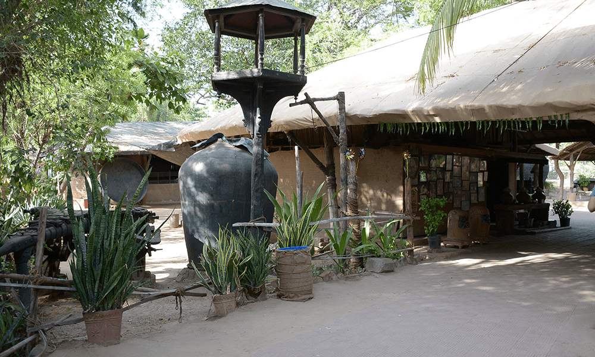

| Established in 1978 with a vision to change the way we see Gujarati food, Mr. Surendra Patel pioneered
the idea of a restaurant that wouldn’t only serve food to the guests but would also give them an
experience. Guests would escape the urban cityscapes and go back to their roots in a rustic and homely
environment. Mr. Surendra Patel, one of Gujarat’s most well-known architects and interior designers,
designed the space, lending keen attention to every detail.
|
 |